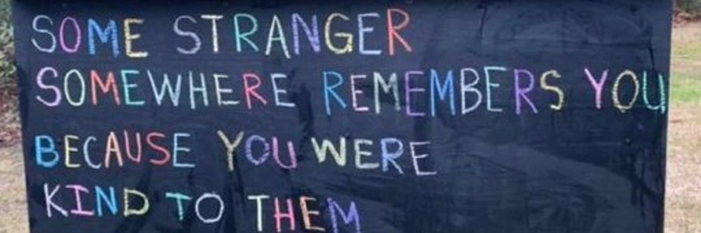

Ishita Shreshtha
I’m doing a PhD in early cancer diagnostics, using spectroscopy and nanotechnology.
I’m a poet. I write for myself and for others, and right now with Poems in Passage.
I organise events at Neill-Wycik, the student co-op I live in.
lately
- Spoke at Soapbox Science
- Co-hosted Open Owl Night with Happy Town
- Wrote poems on the spot for strangers with Poems in Passage

gallery
publications
- Detection of brain metastases from blood using Brain nanoMET sensor: Extracellular vesicles as a dynamic marker for metastatic brain tumors Biosensors and Bioelectronics, 116968 · 2025
- Different preparation and characterization techniques of lipid nanoparticle and its application as drug carrier Vegetos · 2025
- Explanatory Model of South Asian Newcomer Mother and Canadian-Born Mother Comprehension: A Cross-Sectional Advances in Translational Medicine, 4(1), 21–39 · 2025
- Challenges and opportunities of using immobilized lipase as biosensor Biotechnology and Genetic Engineering Reviews, 1–24 · 2022
- Integrated biomedical waste degradation and detoxification Ch. 21 in Integrated Environmental Technologies for Wastewater Treatment and Sustainable Development (Elsevier), 481–508 · 2022
- Pullulan: Biosynthesis, production and applications In Microbial Exopolysaccharides as Novel and Significant Biomaterials (Springer), 121–141 · 2021
essays
- of a father's love20 jun 2026
- some people8 jun 2026
- romantic false positives16 feb 2026
- yak fikr (one mind)19 jan 2026
- on giving yourself a new chance13 dec 2025
- on deaths and breakups5 nov 2025
- do you know your grandparent's birthday?11 oct 2025
- seeing others with our eyes1 oct 2025
- carrying the remnants of the past23 sep 2025
- fall is here30 aug 2025
- reflecting old pieces of writing17 aug 2025
- deaths and endings11 aug 2025
- the curse of being left behind17 jul 2025
- what grief can look like6 jul 2025
- home is where the heart is27 may 2025
- recency bias is a mf18 may 2025
- reflections in the time of war11 may 2025
- current side quest: learning to find things that make me happy4 may 2025
- Bangalore — A City of Dreams4 may 2025
poetry
- a poetry collection
- tiny.poems.co on instagram
older writing
51 pieces from order & chaos, 2019–2024
- father’s day special repost16 jun 2024
- Securing Financial Support in Canada as a Master’s Student1 jul 2023
- Controlling the Strings: A Tragic Burlesque?26 sep 2022
- THE CATASTROPHIC CONUNDRUM OF CORONAVIRUS23 sep 2022
- ~of father’s love~19 jun 2022
- Truth Hurts More: A Review4 apr 2022
- Choices: A Review2 apr 2022
- Where is the Blood: Review1 apr 2022
- ~years of love~21 feb 2022
- ••old age••29 dec 2021
- •things I will tell the world when I turn 22•22 dec 2021
- //prisoners of time//4 dec 2021
- “Soulful Ambition”6 sep 2021
- Mitacs Globalink Research Internship 2023: Application Guide19 aug 2021
- //kriti (creation)//9 aug 2021
- An Open Letter To Someone You Never Thought You’ll Fall In Love With11 jul 2021
- //a rainy day//10 jul 2021
- lines and lies of hope24 apr 2021
- //Monday//13 apr 2021
- ~Flights and Faces~11 apr 2021
- ~nature pt.2~11 apr 2021
- ~nature pt. 1~11 apr 2021
- RANDOM THOUGHTS IN LOCKDOWN9 apr 2021
- //Of Readers and Books//7 apr 2021
- //Hues of Life//6 apr 2021
- Whaling Away5 apr 2021
- PATTERNS3 apr 2021
- Alone?3 apr 2021
- //If Life Could be a Cotton Candy//16 jan 2021
- random life musing3 sep 2020
- //TO THE PAST//30 jul 2020
- //SCARS//14 jun 2020
- TO ANOTHER WEIRD ENDING: LESSONS FROM SEMESTER 39 may 2020
- //Of Silences and Darkness//21 apr 2020
- //MELTING HAPPINESS//8 apr 2020
- //OF LOVE AND HOPE//8 apr 2020
- //STAYING//26 dec 2019
- //FLOWERY FATE//8 sep 2019
- //WHY ARE YOU SAD?//6 sep 2019
- //CELEBRATING MYSELF//14 jun 2019
- //FINGERS, LIPS AND FREEDOM//10 may 2019
- //Endeavours&Expectations//9 apr 2019
- // REMEMBER ME //2 apr 2019
- //Look//30 mar 2019
- //LABELS//29 mar 2019
- //Languages//27 mar 2019
- //ONE NIGHT STAND//24 mar 2019
- //PARALLELS//23 mar 2019
- Alliterated Metaphor17 mar 2019
- Can we write in our sleep?11 mar 2019
- Cold Love – A take on Toxic Relationship10 mar 2019